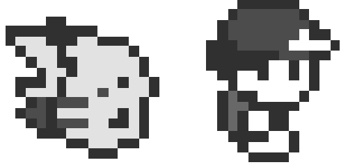
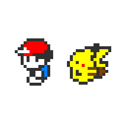
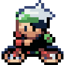

-
Pokémon Red Version and Pokémon Blue Version were the first Pokémon games to be released outside of Japan, becoming available in Europe on October 5, 1999. The games are set in the fantasy world of Kanto and follow the adventure of the main character, Red, in his quest to learn Pokémon battling.
 -
Pokémon Gold and Silver is a Pokémon video game of the second generation. The game features brand new additions from the previous three games. These two games take place in the Johto region and the Kanto region. These games were in color for the first time. And a hundred new Pokémon were introduced in the games.
 -
Pokémon Emerald is the third game set in the land of Hoenn. There are many more things to Emerald including Johto Starters, Contests, Breeding & Ability Additions, Rare Legendary Pokémon, Pokémon from other Regions and many many more The graphics in this game are sharper than in gold and silver with more detail to the overworld
 -
Diamond and Pearl introduced the region of Sinnoh, a landmass based on the Japanese prefecture of Hokkaido. Along a trainer’s journey, they will travel all over the island to collect Gym badges in order to take on the challenge of the Pokémon League and face the Elite Four, a highly skilled group of Pokémon trainers.